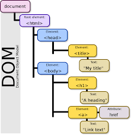
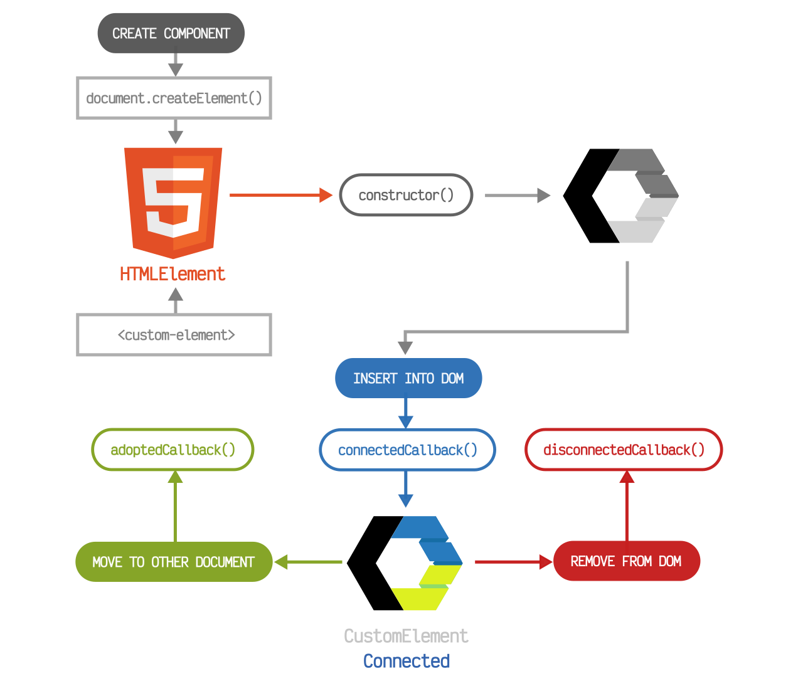

¿Qué es el DOM?
El DOM (Document Object Model) es una interfaz de programación que nos permite crear, cambiar, o remover elementos del documento HTML o XML.
Características del DOM
- Permite agregar eventos a los elementos del documento.
- Permite crear, cambiar, o remover elementos del documento.
- Representa el documento HTML o XML como un árbol de objetos.
Estructura de árbol del DOM
El DOM visualiza el documento de HTML como un árbol de nodos. Un nodo representa un elemento del documento HTML.
Diagrama de ciclo de vida de un webcomponent
El ciclo de vida de un webcomponent incluye las siguientes fases: creación, configuración, actualización y eliminación.
 Leer más